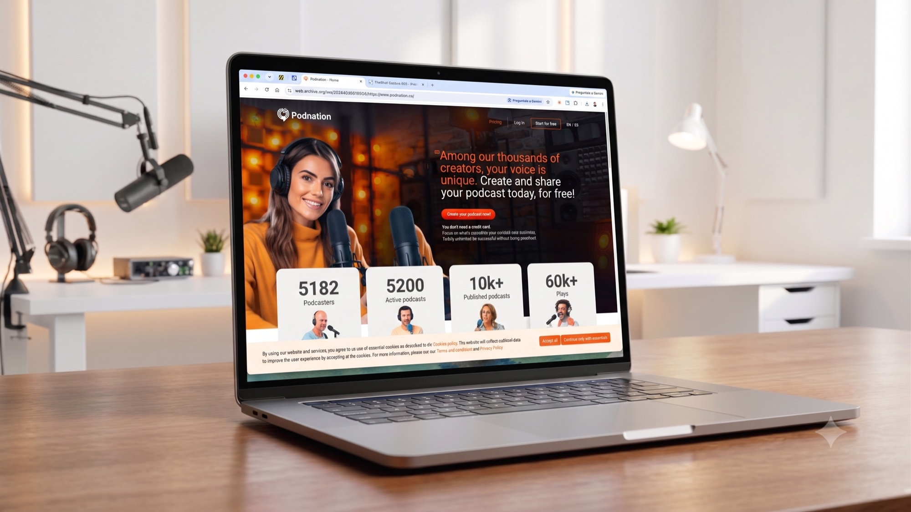
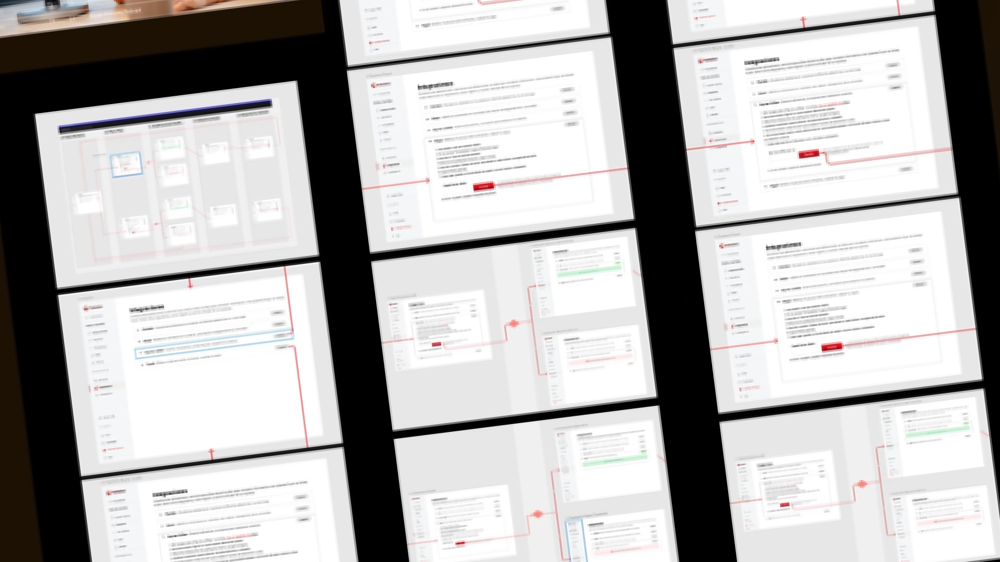
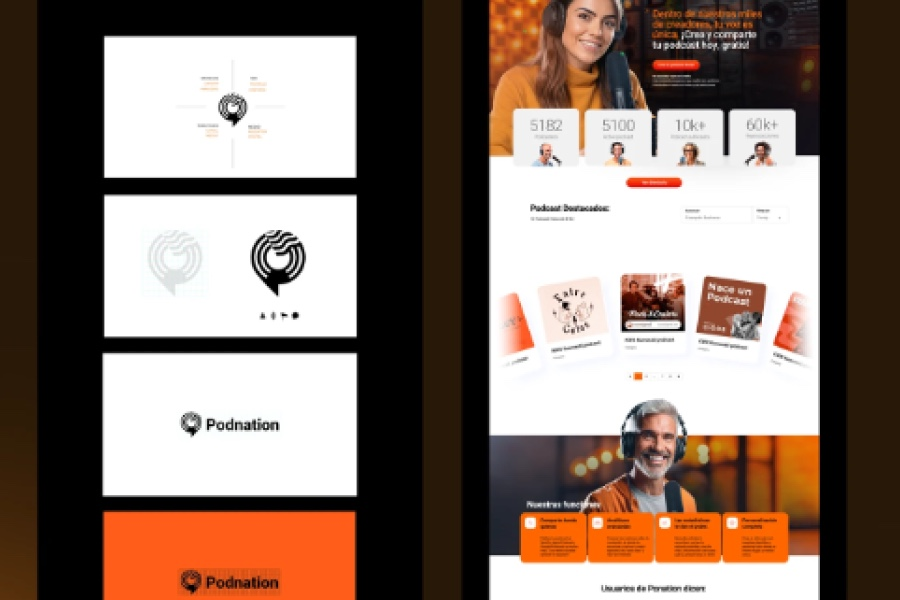
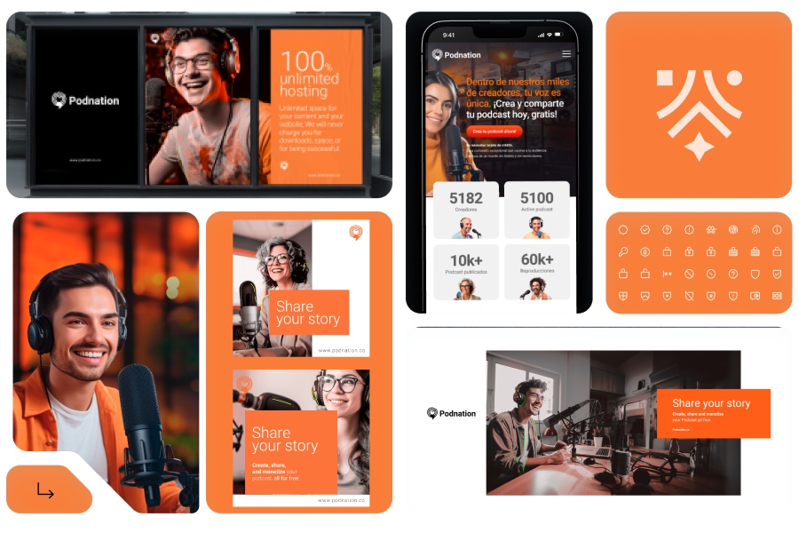
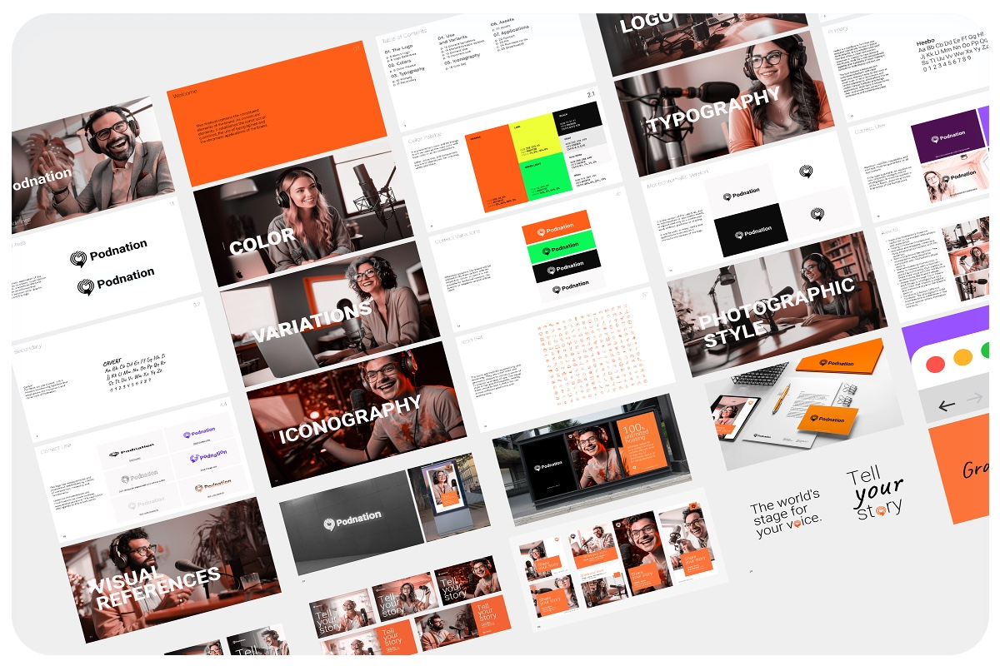

Una plataforma de podcasting renovada que conecta voces hispanohablantes con su audiencia.
Una plataforma de podcasting renovada que conecta voces hispanohablantes con su audiencia, haciendo que crear, distribuir y monetizar contenido en audio sea simple y accesible para todos.
El reto fue crear una identidad visual contemporánea y un sistema UX/UI intuitivo que transformara una plataforma técnica en una experiencia cercana y confiable para creadores de contenido en cualquier nivel de experiencia.

El desafío era renovar una plataforma de podcasting que, a pesar de ofrecer servicios completos de hosting, distribución, monetización y comunidad, no lograba conectar con la nueva generación de creadores de contenido en audio. Los creadores potenciales no conocían Podnation en un mercado dominado por competidores con mayor presencia visual, mientras que la identidad desactualizada generaba poco engagement y carecía de diferenciación clara que atrajera a podcasters hispanohablantes.


Diseñamos flujos simplificados para integrar monetización directamente en el dashboard. Los creadores ahora pueden activar botones de "Buy Me a Coffee" y donaciones con pasos mínimos, y estos aparecen automáticamente en las páginas públicas de sus podcasts. Además, optimizamos la experiencia mobile considerando que la mayoría de oyentes consumen contenido en dispositivos móviles, asegurando que los botones de monetización sean accesibles sin interferir con los controles de reproducción.

Desarrollamos una identidad visual contemporánea liderada por naranja vibrante que transmite energía y cercanía. El sistema de diseño incluye componentes modulares, tipografía moderna optimizada para interfaces digitales y jerarquías visuales claras. La nueva identidad se implementó consistentemente en website, dashboard y páginas de podcasts, creando una experiencia de marca unificada que posiciona a Podnation como la plataforma moderna y accesible para creadores hispanohablantes.
| Área | Descripción |
|---|---|
| Brand Identity Design | Logo, paleta de color naranja vibrante y sistema tipográfico, para transmitir cercanía, energía y profesionalismo en el entorno del podcasting hispanohablante. |
| UX/UI Dashboard Design | Panel intuitivo para gestión de podcasts, optimizado para creadores con diferentes niveles técnicos, con integración nativa de monetización (donaciones, "Buy Me a Coffee"). |
| Website Redesign | Landing page, páginas de producto y páginas públicas de podcasts, enfoque mobile-first y experiencia responsive. |
| Monetization Integration | Flujos UX/UI para activar sistemas de apoyo monetario desde el dashboard, con visualización clara en páginas públicas sin interferir con la escucha. |
| Design Guidelines | Documentación de estilos, componentes y principios visuales para consistencia en futuras iteraciones y assets de marketing. |
Para incrementar el uso de Podnation y atraer más creadores, identificamos la necesidad de ofrecer valor diferencial frente a competidores. Los usuarios buscaban plataformas que no solo alojaran sus podcasts, sino que facilitaran la monetización directa sin complicaciones técnicas ni dependencia de servicios externos.
Diseñamos e integramos funcionalidades de monetización nativas en la plataforma. Los creadores activan botones de "Buy Me a Coffee" y donaciones directamente desde su dashboard con pasos sencillos, apareciendo automáticamente en sus mini sites. Flujos mínimos de configuración, interfaz intuitiva, visualización consistente en desktop y mobile.
Podnation ahora ofrece una experiencia completa donde los creadores no solo publican contenido, sino que monetizan directamente desde la plataforma, incrementando el valor percibido del servicio y el engagement.
Podnation necesitaba una identidad visual que transmitiera confianza, modernidad y cercanía en un mercado competido. La marca existente era percibida como anticuada y no generaba reconocimiento suficiente entre la nueva generación de creadores de contenido hispanohablantes.
Logo y sistema visual frescos y modernos, tipografía clara, paleta naranja vibrante que transmite energía y creatividad, y un estilo que equilibra profesionalismo con cercanía. El concepto del logo integra los cuatro pilares de la comunicación en audio: voz, territorio, mensaje y audiencia. Landing page con jerarquía visual clara, propuesta de valor directa y CTAs efectivos para convertir visitantes en usuarios.
La marca y el landing page se convirtieron en la puerta de entrada al ecosistema: una experiencia coherente, atractiva y profesional. Podnation ahora se posiciona como la plataforma moderna y accesible para creadores hispanohablantes, con una identidad visual que genera confianza y diferenciación inmediata frente a competidores.